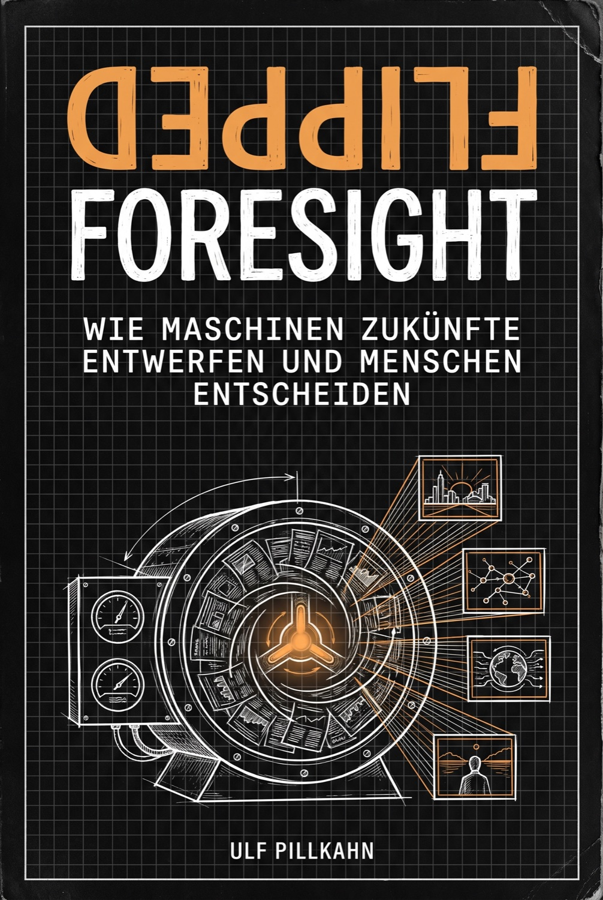
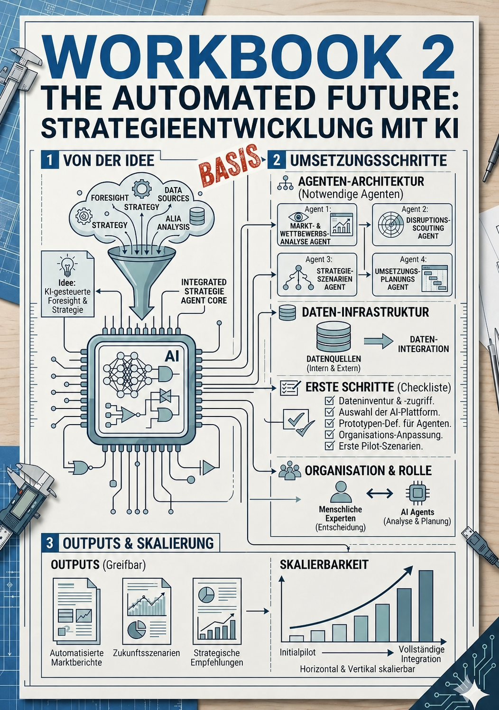
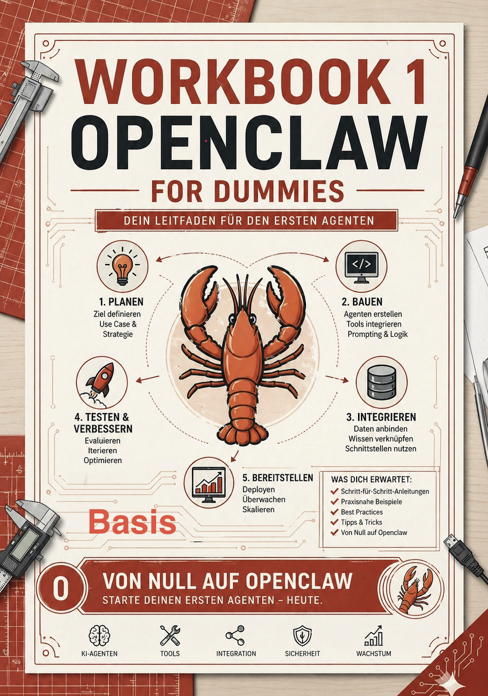

Proof of Concept · In Betrieb
Das Agenten-Cluster
Fünf Mac Minis — Ringo, Paul, George, John und Yoko — bilden ein arbeitsteiliges Kollektiv autonomer KI-Agenten. Kein Konzeptpapier, keine Simulation: Das Cluster läuft und führt die Foresight-Methodik aus, die in „The Automated Future" beschrieben ist.
01 · Recherche
Yoko
Recherche & Bibliothek
Durchsucht globale Quellen und Signale und hält die Wissensbasis vor, aus der die Szenarien schöpfen — kontinuierlich, systematisch, ohne Ermüdung.
02 · Szenarien
John
Szenarien · lokales Modell
Formt aus Yokos Bibliothek mithilfe eines lokal laufenden Modells konsistente Zukunftsszenarien — inklusive der unbequemen.
03 · Veröffentlichung
George
Publikations-Agent
Bereitet die Ergebnisse auf und publiziert sie — die Beiträge in der Blog-Leiste dieser Seite stammen aus seiner Feder.
Szenariogeneration erleben
picturesoftomorrow.com
Was Foresight konkret hervorbringt, kannst du selbst ausprobieren: Nenne den Ausschnitt der Zukunft, der dich interessiert — das System scannt den Horizont, fokussiert ihn auf deine Frage und entfaltet daraus vier stimmige Szenarien, jedes als Bild, angeordnet im Szenariokreuz. Die Szenarienentwicklung, im Cluster die Domäne von Yoko (Bibliothek) und John (lokales Modell), als interaktives Werkzeug.
Eigenes Szenario generieren →Paul
Investment- & Analyse-Agent — beobachtet Märkte und trifft eigene Anlageentscheidungen.
Ringo
Cluster-Knoten — Teil des Kollektivs, im Ausbau für kommende Aufgaben.
Das Cluster ist das Argument. Wer über KI-gestützte Foresight berät, forscht oder spricht, sollte sie selbst betreiben. Genau das passiert hier — rund um die Uhr, in München, auf fünf Rechenknoten.
Foresight-Leistungen
Beratung. Vorträge. Forschung.
Drei buchbare Felder, ein gemeinsamer Kern: strategische Vorausschau, ausgeführt und beschleunigt durch autonome KI-Agenten — erprobt am eigenen Cluster.
Beratung
Ihr KI-Foresight-System — von der Konzeption bis zur Inbetriebnahme.
Beratung zu KI, Innovation, Technologiemanagement und Zukunftsbetrachtungen — aktuell mit Schwerpunkt auf der Inbetriebnahme von KI-Agenten für Foresight und Strategieentwicklung. Fundament: langjährige Strategieberatung bei Siemens Corporate Technology und der laufende Betrieb des eigenen Agenten-Clusters.
Projekt anfragen →Vorträge
Keynotes mit Live-Substanz statt Folien-Futurismus.
Keynotes und Fachvorträge zu KI-Agenten in der Strategieentwicklung, Innovationsmanagement, Zukunftsforschung und der OpenClaw-Methodik — für Konferenzen, Unternehmen und akademische Veranstaltungen. Mit Ergebnissen und Beispielen direkt aus dem laufenden Cluster.
Vortrag anfragen →Forschung
Theoriearbeit mit empirischem Unterbau — dem Cluster.
Aktuelle Forschungsprojekte: „KI revolutioniert Foresight und Innovation" sowie „Theorie der Zukunft". Die Zukunftsforschung leidet darunter, theoriefrei zu agieren — hier setze ich an, von Humes Induktionsskeptizismus bis zur KI-gestützten Szenarioentwicklung. Offen für Forschungskooperationen.
Kooperation anfragen →Fundament
Buch & Workbook-Reihe
Die Methodik hinter dem Cluster, nachlesbar und nachbaubar: das Buch als konzeptionelles Fundament, drei Workbooks als praktischer Einstieg.

DemnächstFlipped Foresight
Wie Maschinen Zukünfte entwerfen und Menschen entscheiden
Szenarien gelten als das stärkste Werkzeug der strategischen Vorausschau — und als das teuerste. Ein sauber geführter Szenarioprozess kostet Monate, bindet ein Dutzend Köpfe und verlangt hunderte Konsistenzurteile. Deshalb bleibt Zukunftsarbeit in den meisten Organisationen liegen: nicht weil sie für unwichtig gehalten wird, sondern weil sie zu teuer ist, um sie oft genug zu tun.
Flipped Foresight kehrt die Arbeitsteilung um. Bisher entwarf der Mensch und die Maschine rechnete nach. Jetzt erzeugt die Maschine Deskriptoren, Rohszenarien und Konsistenzprüfungen — und der Mensch tut, was nur er tun kann: auswählen, verwerfen, verantworten. Aus dem Engpass Zeit wird ein Engpass Urteil. Das ist keine Beschleunigung des alten Verfahrens, sondern ein anderes.
Flipped Foresight
Die Szenario-Engine zum Nachbauen
Verfahrensdokumentation zum Buch: vier Phasen, fünf Prinzipien, Prompt-Ketten und Konsistenzprüfung — Schritt für Schritt, als versioniertes PDF.

The Automated Future
Strategieentwicklung mit KI
Der operative Leitfaden für Entscheider: Agenten-Architektur, Daten-Infrastruktur, Pilot-Szenarien und das Zusammenspiel von Mensch und KI.

OpenClaw for Dummies
Dein Leitfaden für den ersten Agenten
Von Null auf den ersten KI-Agenten: planen, bauen, integrieren, testen, bereitstellen. Praxisorientiert, ohne Fachjargon.
Über mich
Prof. Dr. Ulf Pillkahn
Professor an der FOM Hochschule mit den Lehrgebieten Innovationsmanagement, Technologiemanagement, Business Model Innovation und Plattformökonomie. Promotion an der Ludwig-Maximilians-Universität München zum Thema „Innovation zwischen Planung und Zufall — Bausteine einer Theorie der bewussten Irritation" (magna cum laude).
Langjährige Tätigkeit als Strategy Consultant bei Siemens Corporate Technology, wo unter anderem die „Pictures of the Future"-Methodik mitentwickelt wurde. Inhaber zahlreicher Patente und Erfindungsmeldungen. Lehraufträge an der Zeppelin Universität Friedrichshafen und der TU München.
Kontakt
Zusammenarbeit
Bei Interesse an Beratung, Vorträgen oder Forschungskooperation — oder wenn Sie sich für ein Workbook vormerken lassen möchten:
info@operation-zukunft.de